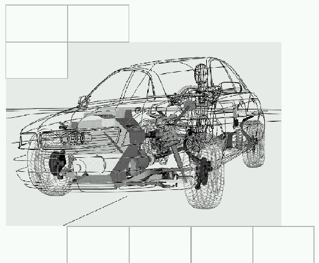

Ebner, Bernhard
[redacted-person] 570625
570625
[redacted-phone]
[redacted-phone]
[redacted-person]./OE
Hausruf [redacted-phone]
Telefax [redacted-phone] Email
[redacted-person]

GurtverankerungLAH [redacted-phone]B
Verteiler:
Abt./OE Name
[redacted]
[redacted]
[redacted]
[redacted]
[redacted]
[redacted-co]
D[redacted]
Inhaltsverzeichnis
Zielsetzung 4[redacted-person] Fahrzeugsicherheit 4Allgemeines 4Funktionsanforderungen 4[redacted-person] 4Komponentenerprobung 4Fahrzeugerprobung 4[redacted-person] 5Allgemeines 5Versuchsaufbau 5starre Platte 5Rohkarosserie 5Sitze / Gurte 5Versuchsdurchführung 7Allgemein 7[redacted-person] 7Prüfkräfte 8Kraftaufbringung 8Haltezeit 8Sitzmasse 9Beurteilungskriterien 9Allgemein 9Vordersitzanlage 9Hintersitzanlage 10Messstellen 10[redacted-person] 11[redacted-person] / Normen 11Typprüfunterlagen / Vorschriften / Gesetze 11Lastenhefte 11[redacted-person] 12
Änderungsdokumentation
Vorwort
Das vorliegende LAH dient zur Ergänzung des Bauteil-Lastenheftes der Konstruktion und legt die technischen Daten und Randbedingungen für die Gurtverankerung bezüglich den Anforderungen der Fahrzeugsicherheit (Crashverhalten) fest.
[redacted-person] der Entwicklung ist der Schutz der Insassen im Falle eines Crashs. [redacted-person]- lungsprodukt muss dazu beitragen, daß sämtliche internen Anforderungen und alle gesetzli- chen Vorschriften vom Gesamtfahrzeug erfüllt werden. [redacted-person] ist das Bestehen von Verbrauchertests „in best class“, sowie Benchmark-Vergleiche während des gesamten Her- stellzeitraumes des Fahrzeuges.
[redacted-person] dient dem Schutz des Insassen im Crashfall. Gemäß aktueller Ge- setzgebung und darüber hinausgehender [redacted-co] Anforderungen ist der Festigkeitsnachweis der Gurtverankerung in quasistatischen, sowie in Crash-Versuchen zu führen.
[redacted-person] sind hinsichtlich der Crashfunktionen (Deformation, Freigang, Blockbildung, Beschleunigung, ...) im Gesamtfahrzeug zu entwickeln. Es gelten die Anforderungen ge- mäß [redacted-person] und TPB.
Vor einer Anlieferung und Abprüfung im Gesamtfahrzeug muss das Crashverhalten der Sitze und betroffene Sicherheitskomponenten wie Sicherheitsgurthöhenversteller, etc. im Einzelteilversuch beim Auftragnehmer geprüft werden.
[redacted-person] sind mit dem Auftraggeber zu diskutieren.
[redacted-person] sind ein Hilfsmittel zur Auslegung des Bauteils. [redacted-person] erfolgt nach positiver Gesamtfahrzeugerprobung.
Die erforderlichen Entwicklungsversuche sind vom Systementwickler durchzuführen. Eine entsprechende Versuchsplanung ist den zuständigen Versuchsabteilungen vorzulegen, bzw. mit ihnen abzustimmen.
[redacted-person]-Verhalten des Gesamtfahrzeugs wird bei [redacted-co] anhand von FE-Simulationen und durch Gesamtfahrzeug-Crashversuche beurteilt. Zeigt sich, daß die Ziele nicht erreicht werden, sind Optimierungen an der Gurtverankerung in Zusammenar- beit mit den Fachabteilungen durchzuführen.
Generell gelten die Richtlinien und Verfahrensanweisungen der betroffenen Gesetzestex- te. Darüber hinaus gehende Vorgaben und Parameter zur Versuchsdurchführung sind vor Versuch mit [redacted-co] abzustimmen.
Die erforderlichen Entwicklungsversuche sind vom Systementwickler durchzuführen. Eine entsprechende Versuchsplanung ist den zuständigen Versuchsabteilungen vorzulegen, bzw. mit ihnen abzustimmen.
[redacted-person] der Vorentwicklung ist es zulässig, die Hintersitzanlage an den Lagerpunkten starr aufzuspannen, d. [redacted-person] aufzubauen.
Jedoch ist es erforderlich, im späteren Entwicklungsstadium (deutlich vor der B-Freigabe) die tatsächlichen Bodensteifigkeiten der Lehnenverankerungen darzustellen und alle Sitzplätze hinten gleichzeitig zu prüfen.
[redacted-person] ist für die Versuchszwecke grundiert oder lackiert. In Ausnahmefällen kann auf eine Lackierung komplett verzichtet werden, dies kann nur in Abstimmung mit der Fahrzeugsicherheit erfolgen. [redacted-person] – Karossen kann auf eine Grundierung oder Lackierung verzichtet werden. [redacted-person] bei Aluminium – Karossen ist aber immer zwingend notwendig. Es ist darauf zu achten, dass festigkeitsrelevante Klebernäh- te ausgehärtet sind.
[redacted-person] ist weiterhin mit Tunnelstreben, Tank und anderen Boden-Verstärkungen auszurüsten.
Aufspannung der Karosse
[redacted-person] ist auf Böcken in der konstruktiv festgelegten Bauebene an den Achs- befestigungspunkten hinten, sowie den Längsträgern vorne aufzunehmen. Hierbei darf der Sicherheitsgurt-Verankerungsbereich nicht verstärkt und die normale Verformung der Karosseriestruktur nicht gemindert werden. (siehe auch gesetzliche Vorgaben)
Um die Gurtverankerung zu prüfen muss der ZSB Sitz mit allen Originalanbauteilen (Sitz- führungsschiene, Originalbeschläge,...) in der Rohkarosserie nach PDM verbaut sein. [redacted-person] an den Gurtankerpunkten sind ebenfalls Originalteile, die nach PDM verbaut werden.
Es ist Gurtband in hochfester Ausführung (FBruch ≥ 30 kN; Dehnung bei 11 kN: 15 %; Di- cke ≤ 1,5 mm; Breite: 48 mm (z.[redacted-person] 83041 Rukaflex der [redacted-person] Berger GmbH & Co.)). oder Seriengurtband zu verwenden.
Es ist vor dem Versuch ein Festigkeitsnachweis für das Gurtband zu erbringen.
Bei allen Gurtanlagen ist das Abrollen der Gurte während des Zugversuches zu verhin- dern (Kraftbegrenzung unterbinden und Gurtband komplett abrollen oder Kraftbegren- zung unterbinden Gurtband entsprechend kürzen).
[redacted-person] ist für verstellbare Sitze gemäß Vorgabe zu variieren. Verfügt der Sitz nicht über eine Höhenverstellung, so sind nur die verschiedenen Längspositionen zu tes- ten.
|
Sitzpositionen | Sicherheitsgurt- höhenversteller | Gesetz | |
|---|---|---|---|---|
| Längseinstellung | Höheneinstellung | |||
|
hinten | unten | mitte | FMVSS 210 |
|
ganz vorne; +10 mm (X) | oben | unten | typische Typ- prüfposition ECE-R14 |
|
ganz hinten; –10 mm (X) | unten | oben | typische Typ- prüfposition ECE-R14 |
|
ungünstigste Posi- tion | ungünstigste Po- sition | ungünstigste Position | ECE-R14 |
Die [redacted-person] in der Karosserie (unverstärkt) sind mit folgenden Sitzpositionen durchzuführen:
|
|
|
|
|---|---|---|---|
|
|
|
|
|
Vorne + 10mm (X), oben |
|
|
|
|
Die [redacted-person] in der Karosserie sind in folgenden Positionen durchzuführen:
|
|
|
|
|---|---|---|---|
|
|
|
|
|
|
|
|
|
|
||
| [redacted-person] |
|
|
|
Vor dem Hauptversuch ist eine Vorspannung in Höhe von 500 N aufzubringen.
[redacted-person] teilt sich der Kraftaufwand in 2 Stufen auf. Zuerst sind die im Gesetz geforderten Kräfte gleichzeitig und einzeln so schnell wie möglich aufzubringen und ge- mäß Haltezeit zu halten. Direkt anschließend sind die Kräfte auf das aus Toleranz- gründen geforderte Überlastungsniveau (Gesetz + 20 %) zu erhöhen und erneut nach Vorgabe zu halten. [redacted-person] ist im Anschluss ausführlich zu dokumentie- ren.
F [kN]
0 t [s]
.
Stufe: Gesetz
Stufe: Gesetz +20%
Sind in einer Sitzreihe mehrere Gurtverankerung vorhanden, so sind diese gleichzeitig abzuprüfen.
Sind mehrere Sitzreihen in einem Fahrzeug abzuprüfen, so sind die weiteren Sitzreihen ebenfalls in derselben Karosse abzuprüfen.
Die gesetzliche Zugkraft unterscheidet sich je nach Gesetz/Gesetzgeber, die [redacted-co]- Vor- gabe (Gesetz + 20 %) erhöht sich entsprechend. Die [redacted-co] – Vorgabe ist notwendig um mögliche Streuung in der Serie abzufangen und zu jeder Zeit eine sichere Gesetzeserfül- lung sicherzustellen. Weiterhin wird empfohlen in der [redacted-person] mit 140% der gesetzlichen Zugkraft durchzuführen, dies dient der Ermittlung der Versagenskraft.
Die zulässigen Prüfkraft-Toleranzen sind den jeweiligen Gesetzen zu entnehmen.
[redacted-person] in dem die Prüfkraft aufzubringen ist, ist dem jeweiligen Gesetz zu entneh- men. Es gilt weiterhin:
| Gesetz |
|
|
|---|---|---|
| FMVSS 210 |
|
|
| ECE-R14; 76/115/EWG |
|
|
Eingeleitet werden die Kräfte mittels Körperblöcken die nach ECE-R14 und FMVSS210 definiert sind.
[redacted-person] ist durch den Gesetzgeber und Vorgaben [redacted-co] vorgegeben.
| Gesetz | Kraftanstiegs zeit (nach Gesetz) |
|
|
|---|---|---|---|
| FMVSS 210 | ≤ 30 s | 2 s ± 0,5 s |
|
| ECE-R14; 76/115/EWG | schnellst möglich |
|
|
Lässt die Gurtzuganlage die [redacted-co]-Vorgabe bezüglich der Kraftanstiegszeit nicht zu, so ist das weitere Vorgehen mit der [redacted-co] - Fahrzeugsicherheit abzustimmen.
Es wird zwischen Gurtverankerung und Sitzfestigkeit unterschieden.
Gurtverankerungszugversuche in der Karosserie (unverstärkt)
[redacted-person].-nr. I., IV. (siehe 4.2.3), sowie Typprüfung USA : > 10 [redacted-person] Lfd.-nr. II.,III. (siehe 4.2.3), sowie Typprüfung EG / ECE : > 1 Sekunde
[redacted-person] von mindestens 10 Sekunden ist nur von Fahrzeugen zu erfüllen, die auf dem amerikanischen oder kanadischen Markt verkauft werden, ansonsten muss hier eine Haltezeit von mindestens 1 Sekunde erreicht werden können.
Sitzfestigkeit (starre Platte bzw. verstärkte Karosserie)
[redacted-person] beträgt immer 10 Sekunden.
Ist ein Teil des Sicherheitsgurtes am Sitz befestigt, muss der Sitz dem zwanzigfachen des vollständigen Sitzeigengewichts standhalten. Es ist das größt mögliche Sitzgewicht zu be- rücksichtigen und nach Absprache mit der [redacted-co] Fahrzeugsicherheit zu erhöhen, um zu- künftige Entwicklungen in der Entwicklung und Zulassung bereits mit abzudecken.
[redacted-person] ist nach FMVSS207, ADR03/02 bzw. ECE-R14 aufzubringen.
Gurtverankerungszugversuche in der Karosserie (unverstärkt)
[redacted-person] in der Karosse ist auch bei der Zugphase 120% nur die 20-fache Sitz- massenkraft aufzubringen. Im Gegensatzdazu wird sie bei der Komponentenprüfung auf starrer Platte um 20% auf die 24-fache Massenkraft erhöht.
Sitzfestigkeit (starre Platte bzw. verstärkte Karosserie)
Die 20-fache Sitzmasse ist während des Zugversuchs analog den Zugkräften an den Körperblöcken auf das 120%-Überlastniveau zu erhöhen. Es ergibt sich somit die 24- fache Sitzmasse.
Die geforderten Kräfte dürfen während der Haltezeit nicht unterschritten werden. Nach dem Versuch sind die einzelnen Bauteile genau zu untersuchen. [redacted-person] der Riss-, Bruch- und Verformungsbildung auch in den angrenzenden Bauteilen, sowie der Sitzdeformation (Kippen, Anlage an Pfosten B, etc.) ist durchzuführen und mit der [redacted-co] Fahrzeugsicherheit abzustimmen.
[redacted-person] aller Bedingungen aus Kapitel 4.4 muss auch bei Prüfung mit größtmögli- chem Sitzgewicht gewährleistet sein.
[redacted-person] des SiGuHv ist während des Versuchs analog der ECE-R14 auf 450 mm über R-Punkt begrenzt.
Zweitürerlehnen müssen nach dem Versuch noch vorklappbar sein.
Ist der Zugang zu der 2. und/oder 3. Sitzreihe nur über Klapplehnen mit Lehnenentriegelung sichergestellt, so muss deren Funktion auch nach dem Zugversuch mindestens noch einmal gewährleistet sein.
[redacted-person]
Der vertikale Abstand zwischen dem Punkt Keff und dem dazugehörigen R-Punkt darf 450 mm während und nach dem Versuch nicht unterschreiten.
Ist die obere Gurtverankerung Keff an der Sitzstruktur befestigt, so ist eine sichere Gesetzeser- füllung zu gewährleisten. [redacted-person] dient eine horizontale Vorverlagerung von Keff während des Versuches zur Fahrzeugquerebene von X = 100 mm vor dem R-Punkt.
Die gesetzlich vorgeschriebenen Messstellen, sowie der Zylinderweg sind immer mitzumessen. [redacted-person] sind je nach Gegebenheit in Absprache mit der Fahr- zeugsicherheit hinzuzufügen.
Bei der Prüfung der Gurtverankerung sind –soweit der Bauraum dies zulässt– die Gurtkräf- te am Gurtautomaten, Becken- und Schultergurt zu messen.
Wird die 20-fache Sitzmasse aufgebracht gilt:
Bei den Hinterlehnen in der mittleren oder hinteren Sitzreihe ist die Lehnenvorverlagerung am Lehnenende (Fahrzeugmitte zugewandte Seite) und an den Gurtaustrittspunk- ten/Gurtautomat, falls nicht vorhanden in der Lehnenmitte, während des Versuchs zu mes- sen. Ausgenommen von der Messung sind Lehnen der mittleren oder hinteren Sitzreihe bei denen die Lehne starr mit der Karosse verschraubt sind.
[redacted-person] stellt sicher, jeweils mit den aktuellen Unterlagen zu arbeiten.
Es gelten die am Ausgabedatum des Lastenheftes gültigen mitgeltenden Unterlagen. Abweichungen sind mit den jeweiligen Fachabteilungen des Auftraggebers abzustimmen und im Lastenheft zu dokumentieren.
VDA [redacted-phone] Werkstoffklassifizierung im Kraftfahrzeugbau; Aufbau und Nomenklatur
VDA 260 Bauteile von Kraftfahrzeugen; Kennzeichnung der Werk- stoffe
[redacted] Anforderungen an CAD/CAM-Daten; Darstellung technischer Sachverhalte
[redacted] Anforderungen an CAD/CAM-Daten; Datenqualität
[redacted] Entwicklungsbedingungen
[redacted] Fahrzeugzulieferteile allgemein
[redacted] Firmenzeichen, Teilekennzeichnung; Richtlinie für die An- wendung
sowie die darin genannten Dokumente
EU-Richtlinie [redacted-phone]EG EU-Richtlinie zum Fahrzeugrecycling
ECE-R14 Verankerung von Sicherheitsgurten in PKW
ECE-R44 Kinderhaltesysteme, Verankerung
76/115/EWG Verankerung von Sicherheitsgurten in PKW
2000/3/EG Gurteinbau
FMVSS 207 Sitzsysteme
FMVSS 210 Sicherheitsgurtverankerungen
CMVSS 207 Sitze
CMVSS 210 Gurtverankerung
ADR 03/02 Sitze und Sitzverankerungen
Trias 37 Gurtverankerung sowie die darin genannten Dokumente
LAH [redacted-phone]J Allg. [redacted-person]
LAH xxx 000 [redacted-person] Fahrzeugsicherheit
LAH xxx 881x Sitz – Sicherheits - LAH Vordersitzanlage
LAH xxx 885 Sitz – Sicherheits - LAH Hintersitzanlage
LAH [redacted-phone]Allgemeines Q-Lastenheft [redacted-co]
LAH [redacted-phone]Kundendienst-Grundsatzanforderungen [redacted-co]
LAH [redacted]und Humanverträglichkeit der [redacted]
Umweltlastenheft [redacted-person] sowie die darin genannten Dokumente
laboratory test procedure for FMVSS 207
laboratory test procedure for FMVSS 210
Testanweisung zur FMVSS 207 Testanweisung zur FMVSS 210
Formel Q Konzern-Richtlinien der [redacted-person]: Formel Q-Konkret, -Neuteile, -Fähigkeit, -Serienreife
Logistik-[redacted-person] der Transportmittel der Logistikplanung des Auf-
traggebers
SE-Checkliste
Umweltmanagement VW-Umweltmanagement-Handbuch
Prototypenteile Lieferantenhandbuch für Prototypenteile des Versuchsbaus
[redacted-co] sowie die darin genannten Dokumente